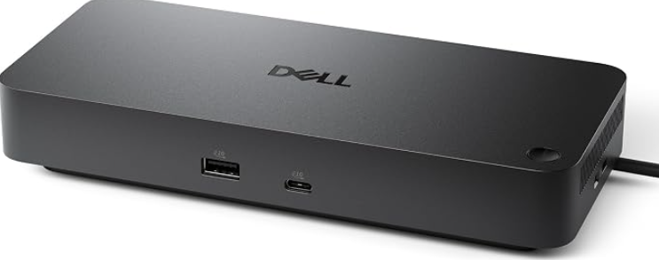

Dell Pro Dock WD25 Product Review
The WD25 is not a flashy Thunderbolt dock. That is precisely why it is interesting: Dell built a USB-C office dock around the ports, charging, Ethernet speed, fleet-management features and monitor outputs that normal desks actually use.
CONFIDENCE
QuietTrends may earn a commission when you purchase through links on this site. This helps support our research at no additional cost to you.
Executive Summary
Buy the Dell Pro Dock WD25 if your desk revolves around a modern Dell business laptop and you want one-cable charging, wired 2.5Gb Ethernet, several display outputs and predictable enterprise-management features. At a recent Amazon price around $154, it undercuts Dell's $199.99 direct price while current marketplace tracking shows unusually strong demand.
The WD25 is easiest to recommend when you need a dependable office dock, not when you need Thunderbolt bandwidth.
Dell specifies up to 100W power delivery to compatible Dell systems and 96W to non-Dell systems, four video-capable outputs, 2.5GbE, six USB data ports, a 130W power adapter and business features including MAC-address pass-through, PXE boot, Wake-on-LAN and port disablement. The important caveat is that “supports four displays” is not a universal promise: actual monitor count and resolution depend on the host laptop's DisplayPort version, available lanes, Display Stream Compression support, processor and operating system.
RECOMMENDED FOR
- Dell Pro, Latitude and other USB-C office-laptop users who want a first-party dock.
- Home offices upgrading from older WD19-series docks and Gigabit Ethernet.
- Managed business fleets that use PXE, MAC pass-through, Wake-on-LAN or dock firmware controls.
- Desks that need DisplayPort, HDMI, USB-C display output and several 10Gbps USB ports in one box.
Skip If
- Your workflow genuinely requires Thunderbolt peripherals, PCIe tunneling or eGPU support.
- Your Dell mobile workstation expects more than 100W from its dock.
- You are buying solely because the product page says “four displays” without checking your laptop's DSC and bandwidth capabilities.
- You primarily use a Mac and want guaranteed multi-display behavior across Apple Silicon models.
- You need an SD-card reader or 3.5mm audio jack built into the dock.
Price Reality Check
Dell currently lists the WD25 at $199.99 in the U.S. The exact Amazon configuration tracked for this review, ASIN B0FCSHJGGK, has recently sold around $153.99. That discount changes the comparison: around $150, the WD25 competes aggressively with generic USB-C docks while retaining Dell's three-year hardware warranty and enterprise-oriented firmware ecosystem.
Around $154, the WD25 is compelling for a Dell-centered desk. Around $200, compare Thunderbolt alternatives before deciding.
Do not overpay for bandwidth you cannot use, but do not underbuy charging either. The WD25 delivers up to 100W to supported Dell systems and up to 96W to non-Dell USB-C systems. That is ample for mainstream business notebooks, but high-performance Precision-class mobile workstations can require more power and may display a slow-charger warning or draw supplemental battery power under load.
Product Deep Dive
USB-C, Not Thunderbolt—and That Can Be a Feature
The WD25 uses USB-C with DisplayPort Alt Mode rather than Thunderbolt. For ordinary office work, that simplifies the proposition: keyboard, mouse, Ethernet, storage, monitors and laptop charging all converge on one host cable without paying for capabilities many desks never use.
The tradeoff is bandwidth headroom. Thunderbolt docks are better suited to high-speed external storage, certain professional peripherals and more forgiving high-resolution display combinations. If those words do not describe your desk, the WD25's simpler USB-C architecture may be the more sensible purchase.
The Four-Display Claim Needs a Footnote
Dell's own resolution table shows why laptop compatibility matters. With Display Stream Compression available, the dock can support configurations such as four 3440×1440 displays at 60Hz or two 5120×2160 displays at 60Hz. Without DSC, available combinations fall substantially—to examples such as two 2560×1440 displays at 60Hz or one 4K display at 60Hz.
Buyer takeaway: the dock provides four physical display paths; your laptop determines how much video data can actually reach them.
- Video outputs include two DisplayPort 1.4 ports, HDMI 2.1 and one multifunction USB-C/DisplayPort 1.4 port.
- Check the exact laptop CPU/GPU and USB-C DisplayPort capability before planning three- or four-monitor layouts.
- Direct DisplayPort or HDMI cabling is preferable to legacy DVI adapters where possible.
- Keep dock firmware, laptop BIOS and graphics drivers current—but treat firmware changes like any other infrastructure change if your existing setup is stable.
2.5GbE Is the Most Practical Upgrade
Older Dell USB-C docks commonly topped out at Gigabit Ethernet. The WD25 moves to 2.5GbE, which is useful for offices with multi-gig switches, NAS storage, large local file transfers or faster-than-gigabit Internet service. It does not make ordinary web browsing faster by itself, but it removes a wired-network bottleneck that is increasingly noticeable on modern infrastructure.
The Port Mix Is Built for a Permanent Desk
The WD25 supplies four USB-A 3.2 Gen 2 ports rated at 10Gbps, one USB-C 3.2 Gen 2 data port, the multifunction USB-C display port, 2.5GbE, two DisplayPort outputs and HDMI. Dell says the USB ports continue supplying power with or without a connected PC.
What is missing is just as useful to know: there is no integrated card reader and no analog audio jack. Creators who regularly ingest SD cards will need another reader; headset users may prefer their laptop's audio connection, USB audio or Bluetooth.
Real-World Ownership Check
The WD25 has a larger evidence base than many newly promoted docks. Dell's U.S. product page shows hundreds of verified-user ratings with a strong average, while current Amazon-market tracking indicates substantial purchase velocity. Community IT administrators generally distinguish the WD25 favorably from some of Dell's newer Smart Dock variants, but firmware and display-handshake problems still appear in real deployments.
- Before buying: use Dell's compatibility documentation for the exact laptop model rather than assuming every USB-C port supports video and charging.
- First setup: update laptop BIOS, graphics, network and dock firmware in a controlled sequence, then test sleep/wake and monitor recovery repeatedly.
- Displays: use native DP/HDMI connections where practical; legacy adapters add another failure point.
- Ethernet: confirm the network switch and cabling also support 2.5GbE before expecting multi-gig throughput.
- Power: watch for slow-charger warnings on high-performance laptops during sustained workloads.
- Troubleshooting: if displays disappear after sleep, test a full dock power cycle as well as a laptop reboot; dock firmware can retain state independently of Windows.
What I Would Compare Next
- Dell WD19S: compare if you already own one and do not need 2.5GbE, HDMI 2.1 or the newer port layout.
- Dell WD22TB4: compare if Thunderbolt 4, higher Dell-system charging on supported configurations or Thunderbolt peripherals matter.
- Dell Smart Dock SD25 / Thunderbolt variants: compare for newer fleet-management requirements, but research current firmware and display behavior carefully.
- CalDigit TS4-class docks: compare when a mixed-device household values Thunderbolt bandwidth and broader peripheral flexibility more than Dell fleet features.
- Generic USB-C docks: compare if your desk only needs one or two displays, Gigabit Ethernet and basic USB expansion; the WD25's enterprise features may be unnecessary.
Buyer Signal Analysis
The demand signal is unusually strong for a business dock. Current Amazon marketplace tracking lists exact ASIN B0FCSHJGGK at roughly 4,000+ purchases in the past month, about a 4.5-star rating, and a recent $153.99 price. Dell's own U.S. page separately shows a 4.6-class rating across more than 600 verified-user reviews and a $199.99 direct price. Those two signals suggest the WD25 is not merely an IT catalog part—it is moving at consumer-retail scale.
Search competition remains manageable relative to that demand. Exact-model searches surface Dell documentation, retailers, Reddit/sysadmin discussions and a handful of specialist docking-station reviews. There are dedicated current reviews from ByrdPilot, docking-stations.info and a low-authority review site, but the query is not crowded by several major general-technology publishers. That leaves a useful buyer-intent gap around one question: will the WD25 actually drive my monitors and charge my laptop the way I expect?
Assimilated Signal Sources
- Dell specifications: support the 100W/96W charging limits, 2.5GbE, display-resolution tables, port layout, operating-system support, management functions and three-year warranty.
- Dell verified-user signal: provides a large first-party owner-rating base rather than relying only on launch coverage.
- Amazon-market tracking: identifies exact ASIN B0FCSHJGGK, the recent $153.99 price and 4,000+ monthly purchase signal.
- Specialist reviews: consistently identify 2.5GbE and the broad display/port mix as strengths while emphasizing that four-monitor capability depends on the host.
- IT community reports: show that firmware, sleep/wake behavior, adapters and host compatibility remain the practical trouble spots even when the dock works well in standardized Dell fleets.
- QuietTrends analysis: the WD25's value comes from reducing desk friction for mainstream business laptops, not from winning a raw-bandwidth specification contest.
Unanswered Buyer Questions
- Which current Dell laptop families can drive three or four external displays through the WD25 without compromising resolution or refresh rate?
- How stable will display wake behavior remain across future Windows, BIOS, graphics-driver and dock-firmware updates?
- Will Amazon's roughly $154 price persist after the current high-volume sales period?
- For mixed Dell and non-Dell fleets, is 96W USB-C power enough to standardize on one dock?
- Does moving from a stable WD19S to the WD25 solve a real bottleneck, or merely replace hardware that already works?
QuietTrends read: the WD25 is a strong example of boring technology becoming valuable when it removes several small daily annoyances at once. The buying mistake is not choosing USB-C over Thunderbolt; it is buying any dock before checking what the host laptop can actually deliver through its USB-C port.
BUY FOR A MODERN DELL DESK
Dell Pro Dock WD25
At roughly $154, the WD25 combines a first-party Dell support path, 2.5GbE, a generous port mix, strong office-laptop charging and useful fleet features at a price that competes with generic docks. Its biggest limitation is not the dock itself but the complexity of USB-C display bandwidth: the impressive monitor table only applies when the host can feed it.
Final Buyer Guidance: Buy if you use a compatible Dell business laptop, need 100W-class charging and wired 2.5GbE, and have verified your monitor layout against the laptop's DP/DSC capabilities. Keep a WD19S if it already meets your needs. Move to Thunderbolt when your peripherals, workstation power requirements or display topology genuinely demand the extra bandwidth.
CHECK CURRENT PRICE ON AMAZON →